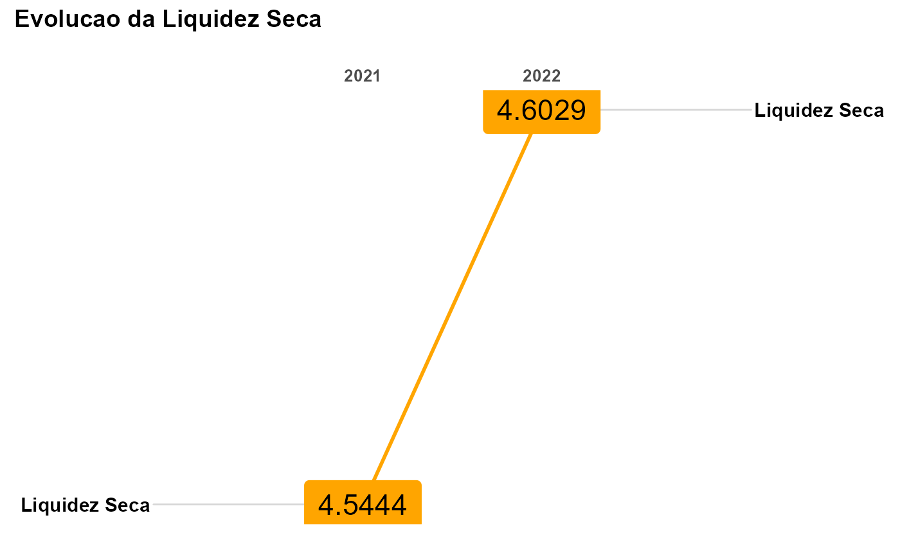

Índice de Liquidez Seca
Um vetor tipo character com o nome do indicador
Vetor numérico indicando o período da análise
Vetor com os valores do caixa e equivalentes de caixa (Ativo Circulante)
Vetor com os valores do estoque (Ativo Circulante)
Vetor com os valores do contas a receber (Ativo Circulante)
Vetor com os valores de outros ativos circulantes (Ativo Circulante)
Vetor com os valores de fornecedores (Passivo Circulante)
Vetor com os valores de empréstimos e financiamentos de curto prazo (Passivo Circulante)
Vetor com os valores de outros passivos circulantes (Passivo Circulante)
Vetor com os valores do Ativo Total
Mostra gráfico? (TRUE/FALSE)
O índice de Liquidez Seca revela a capacidade de pagamento de dívidas de curto prazo, considerando que a empresa não consiga reverter o valor de seus estoques em dinheiro. Relaciona, portanto, quanto uma empresa possui de ativo (circulante), deduzido do valor de seus estoques, com o total de seu passivo circulante. É representado pela fórmula:
$$\frac{AC - Est}{PC}$$ em que: AC é o Ativo Circulante, Est é o estoque e PC é o Passivo Circulante
Para melhorar o processo de análise, os valores de Ativos Circulante e Passivo Circulante foram desmembrados, respectivamente para \(AC = cxEquiv + estoque + ctaRecCP + outAtvCirc\) e para \(PC = fornec + dividasCP + outPasCirc\). O item detalhes (details) apresenta a descrição de cada conta.
Assim, tem-se que a liquidez seca corresponde a:
$$\frac{(cxEquiv + ctaRecCP + outAtvCirc)}{(fornec + dividasCP + outPasCirc)}$$
A equação não contempla todas as contas do ativo circulante com exceção da conta estoque.
Indicamos essa análise quando a empresa apresentar dificuldade com o giro de seus estoques. Em codições normais, não haveria motivos para a empresa não conseguir rotacionar seus estoques. Quando há indicativos de que a rotação dos estoques ficará prejudicada, esse indicador poderá representar melhor a capacidade das empress em quitar suas dívidas de curto prazo.
suppressMessages(suppressWarnings(library(cntdd)))
suppressMessages(suppressWarnings(library(dplyr)))
suppressMessages(suppressWarnings(library(tidyr)))
suppressMessages(suppressWarnings(library(ggplot2)))
## Usando Vetores
ind_liqSeca(
indicador = "Liquidez Seca",
periodo = 2018:2020,
cxEquiv = c(500,300,400),
estoque = c(2000,3000,4000),
ctaRecCP = c(2500, 5000, 2800),
outAtvCirc = c(20, 35, 80),
fornec = c(1200, 1400, 1600),
dividasCP = c(500, 200, 750),
outPasCirc = c(30, 20, 40),
atvTotal = c(10000, 12000, 11000),
plot = T)

#> $Contas
#> # A tibble: 8 x 4
#> conta `2018` `2019` `2020`
#> <chr> <dbl> <dbl> <dbl>
#> 1 cxEquiv 500 300 400
#> 2 estoque 2000 3000 4000
#> 3 ctaRecCP 2500 5000 2800
#> 4 outAtvCirc 20 35 80
#> 5 fornec 1200 1400 1600
#> 6 dividasCP 500 200 750
#> 7 outPasCirc 30 20 40
#> 8 atvTotal 10000 12000 11000
#>
#> $Índice
#> # A tibble: 1 x 4
#> conta `2018` `2019` `2020`
#> <chr> <dbl> <dbl> <dbl>
#> 1 Liquidez Seca 1.75 3.29 1.37
#>
#> $`Análise Vertical`
#> # A tibble: 7 x 4
#> conta `2018` `2019` `2020`
#> <chr> <chr> <chr> <chr>
#> 1 AV.cxEquiv 5.00% 2.50% 3.64%
#> 2 AV.Estoque 20.00% 25.00% 36.36%
#> 3 AV.ctaRecCP 25.00% 41.67% 25.45%
#> 4 AV.outAtvCirc 0.20% 0.29% 0.73%
#> 5 AV.fornec 12.00% 11.67% 14.55%
#> 6 AV.dividasCP 5.00% 1.67% 6.82%
#> 7 AV.outPasCirc 0.30% 0.17% 0.36%
#>
#> $`Análise Horizontal`
#> # A tibble: 7 x 3
#> conta `2019` `2020`
#> <chr> <chr> <chr>
#> 1 AH.CxEquiv 40.00% 33.33%
#> 2 AH.Estoque 50.00% 33.33%
#> 3 AH.ctaRecCP 100.00% 44.00%
#> 4 AH.outAtvCirc 75.00% 128.57%
#> 5 AH.fornec 16.67% 14.29%
#> 6 AH.dividasCP 60.00% 275.00%
#> 7 AH.outPasCirc 33.33% 100.00%
#>
## Usando um data.frame
## Todos as variáveis devem ser do tipo numérico e os dados faltantes devem ser
## substituidos por zero.
dadosAlpha <- dt_contabil %>% filter(empresa == "alpha")
ind_liqSeca(
indicador = "Liquidez Seca",
periodo = dadosAlpha$ano,
cxEquiv = dadosAlpha$cxEquiv,
estoque = dadosAlpha$estoque,
ctaRecCP = dadosAlpha$ctaRecCP,
outAtvCirc = dadosAlpha$outAtvCirc,
fornec = dadosAlpha$fornec,
dividasCP = dadosAlpha$dividasCP,
outPasCirc = dadosAlpha$outPasCirc,
atvTotal = dadosAlpha$atvTotal,
plot = F)
#> Error in data.frame(Periodo = periodo, ratio = ratio): arguments imply differing number of rows: 6, 0